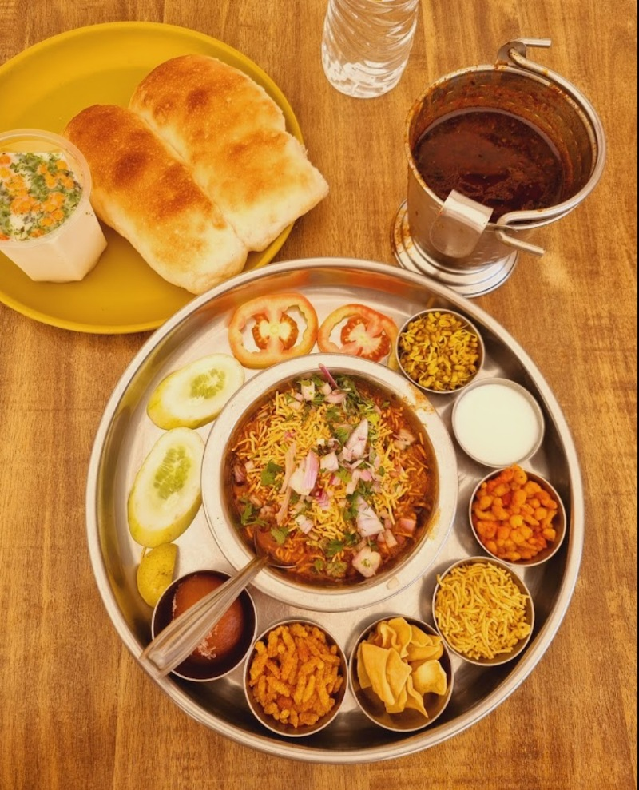

Misal Pav (Misal Recipe)

Misal pav is a popular Maharashtrian street food of usal
(sprouts curry) topped with onions, tomatoes, farsan (fried savory mixture),
lemon juice, coriander leaves and served with a side of
soft pav (Indian dinner rolls). The sprouts curry is made from moth
bean sprouts. This misal recipe is a tasty and filling
vegan dish that can be served as breakfast, lunch or brunch.
Lets see the recipe now
Ingredients
Servings-4
For Cooking Sprouts
- 2 cups moth bean sprouts (matki sprouts) or mixed bean sprouts or moong bean sprouts – I used about 1 cup of moth beans to prepare the sprouts
- 2 potatoes small to medium – cubed in 1.5 to 2 inches
- ½ teaspoon turmeric powder
- ½ teaspoon salt
- 3 cups water or as required
For The Usal (Sprouts Curry)
- 1 onion medium to large – finely chopped
- 1 to 2 green chilies – chopped
- 1 to 1.5 teaspoon Ginger Garlic Paste or 3 to 4 garlic cloves + 1 inch ginger- crushed in a mortar-pestle to a fine paste
- 1 teaspoon mustard seeds
- 1 teaspoon cumin seeds
- 10 to 12 curry leaves
- 1 to 1.5 tablespoon Goda Masala or kala masala
- ½ teaspoon red chili powder
- ¼ teaspoon turmeric powder
- 1 teaspoon Coriander Powder
- 1 teaspoon cumin powder
- 1.5 teaspoons tamarind – soaked in ⅓ or ½ cup water or 2 to 3 kokums
- ¾ to 1 cup water or add as required
- 3 tablespoons oil
- salt as required
For Misal Pav
- 8 to 10 pav (bread rolls) or bread slices as required
- ½ cup finely chopped onions
- ½ cup finely chopped tomatoes optional
- ½ to 1 cup thick sev or farsan (chiwda), fried savory snack mixture
- 1 lemon or lime quartered or diced
- ⅓ cup chopped coriander leaves
- ½ cup Curd or yogurt, beaten, optional
Instructions
Preparation
- Rinse the moth bean sprouts first in running water a couple of times.
- Drain the water and then add the sprouts, cubed potatoes turmeric powder and salt in a pressure cooker.
- Add water and mix well. If using mixed bean sprouts, you will have to add more water.
- Note that the water should be covering the matki sprouts about 2 inches above. The quantity of water will vary with the depth and length of the pressure cooker, so add more water if needed.
- Pressure cook for 2 to 3 whistles. You can also cook the bean sprouts in a pan or Instant pot adding required amount of water.
- In a small bowl soak the tamarind in ⅓ or ½ cup warm water for 25 to 30 minutes.
- Squeeze the tamarind and extract the pulp. Keep the tamarind pulp aside.
Making Usal For Misal Pav
- Heat oil in another pan. Keep the heat to low and then crackle the mustard seeds.
- Then add the cumin and saute for some seconds till the cumin gets golden
.
- Add the chopped onions and saute till translucent stirring often.
- Then add the curry leaves, ginger-garlic paste and green chilies
- Stir and saute for few seconds or till the raw aroma of ginger-garlic goes away.
- Add the turmeric powder, coriander powder, cumin powder, red chili powder and goda masala.
- Stir and then add the tamarind pulp. Saute till the raw aroma of the tamarind goes away.
- Drain the water using a strainer from the pressure cooked matki sprouts and potatoes and add them to the pan.
- Stir and add ¾ to 1 cup water or more water if required depending upon the consistency you want in the usal.
- Season with salt and simmer the usal for 8 to 10 minutes on a low heat with occasional stirrings.
- Lastly garnish with coriander leaves. if you want you can also add sugar or jaggery for some sweetness
Assembling The Misal Pav
- Whilst the usal is simmering, you can prep the toppings for the misal pav.
- Finely chop the onions and tomatoes. Keep aside.
- Take the steaming usal in 3 to 4 individual serving bowls or plates.
- In each bowl of usal, first add the chopped onions and tomatoes.
- Then top usal with chopped coriander leaves. Squeeze a few drops of lemon juice. Then top it with farsan or chiwda.
- Serve the misal bowl in a plate with pav buns and a side of chopped lemons, finely chopped onions and farsan/sev/chiwda. Enjoy the misal pav hot as soon as it is prepared.